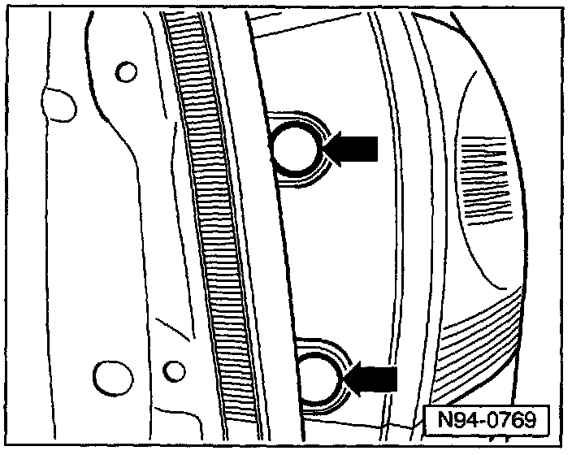
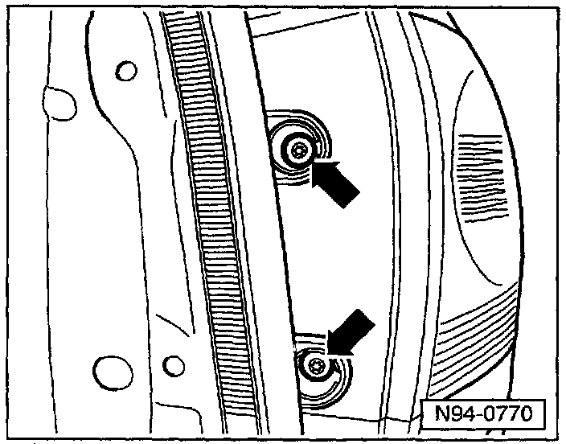
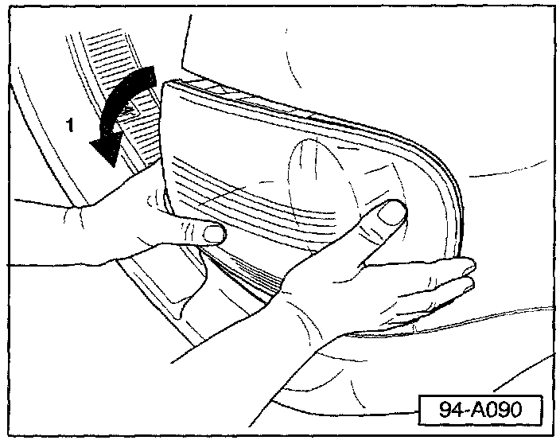
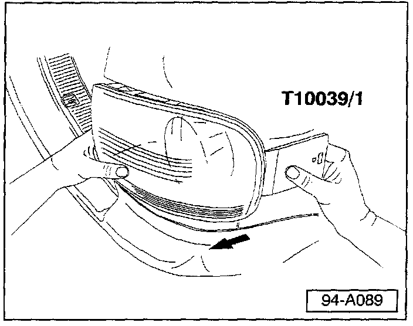

Lighting - Tail Lamp Removal Procedure
Group: 94Number: 03-03
Date: Sept. 30, 2003
Subject:
Tail Light Assembly, Removal Procedure
Model(s):
Touareg 2004 > See VIN below
Condition
If care is not taken, tail tight assemblies may break during removal process.
Production
Enlarged fastening receptacle in body assembly beginning VIN: WVGCM67L84D016297
Service
If repair requires tail light removal, use the following procedure:
Tail light, Removing
- Open rear lid.

- Remove screw head trim covers -arrows-.

- Remove Torx screws with T-25 Torx screw driver.
Note:
In addition to the screws, the rear light housing is secured by a ball head a securing clip, finish removal as follows.

- Turn tail light in direction of -arrow- towards outboard side of vehicle until upper edge of tail light housing becomes visible.

- Insert wedge tool T 10039/1 between body and outer edge of tail light.
- Pull simultaneously with one hand and pop tail light (with wedge tool) in direction of -arrow-, until tail light is released.
- Disconnect wiring harness from the tail light assembly.